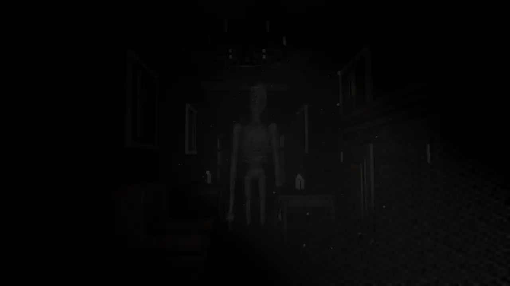

01
Voir sur TikTok ↗
« Plz guyz i am la vraie »
La vidéo est hébergée par TikTok, qui dépose ses propres cookies.
Je poste des vidéos sur TikTok, je crée un jeu d’horreur sur Roblox et je joue en RP. Le tout en solo.
À propos
C’est Siroxtag, pas Petite précisionInoxtag est un autre créateur de contenu. Il n’a aucun lien avec moi ni avec ce site : pas de partenariat, pas de soutien, pas de collab. On a juste des pseudos qui se ressemblent. Mentions légales hein !
Siroxtag, c’est mon pseudo. Je suis un créateur indépendant : je publie des vidéos sur TikTok, sous le compte @siroxletag. Des parodies, des edits, de l’humour, des trends, un peu de bouffe et des clips de GTA RP.
À côté, je développe BLACKOUT, un jeu d’horreur coop gratuit sur Roblox, jouable seul ou jusqu’à 12 joueurs. Et sur le serveur GTA RP Paris-Bruxelles RP, je joue Siroxtag LANDER, le gérant de Linear., une entreprise de roleplay.
Je fais tout ça seul, de l’idée au montage. Ce site regroupe mes vidéos, mes projets et les liens pour me suivre.
01 — TikTok
Mon compte, c’est @siroxletag. L’ancien, @siroxtag, n’existe plus : tout se passe ici maintenant.
Chiffres relevés en novembre 2026
Ce que je poste
Mes vidéos sont courtes, souvent drôles, parfois absurdes. Je suis les tendances du moment, je fais des montages sur du funk avec mon propre son et je détourne les codes des influenceurs : fausses stars, faux hauls, fausses collabs. Le tout sans jamais me prendre au sérieux.
Je joue les fausses stars et les faux hauls. C’est ce qui marche le plus.
« Plz guyz i am la vraie »45,3 k vues
Des montages sur du funk, avec mon propre son.
« 2 edits / 1 video »12,8 k vues
Des burgers. Et je ne flex pas.
« Je flex pas »9,6 k vues
Les trends du moment, à ma façon.
« just post idk »#trend #funny
Du RP sur GTA, et des jeux quand l’inspi manque.
« Au cas où j’ai toujours pas d’inspi »GTA RP
Des carrousels et des memes.
« Hey hi hello yo wassupp »Mode photo
« Plz guyz i am la vraie »
La vidéo est hébergée par TikTok, qui dépose ses propres cookies.
« 2 edits / 1 video »
La vidéo est hébergée par TikTok, qui dépose ses propres cookies.
« Je flex pas »
La vidéo est hébergée par TikTok, qui dépose ses propres cookies.
02 — Projets
Un jeu d’horreur sur Roblox, et une entreprise sur Paris-Bruxelles RP.

Jeu Roblox · Horreur coop
Mon jeu d’horreur coop, gratuit sur Roblox. Tu relances le courant, tu trouves les clés, tu te caches… et tu ne laisses personne derrière.
Neuf chapitres, de la station Hollow Pines à l’île de Blackwater, en passant par Cedar Falls, le manoir Hale et l’asile de Blackmoor. Ça se joue sur ordinateur, téléphone et tablette.
« Ne laisse pas la lumière s’éteindre. »
RP · Paris-Bruxelles RP
Mon entreprise sur Paris-Bruxelles RP. J’y joue Siroxtag LANDER, le gérant. Le dossier de création est en ligne, monté comme une vidéo.
Une entreprise de roleplay sur un serveur GTA RP : recrutement en trois étapes, trois grades, 50 employés au maximum et 5 000 000 $ de capital de départ, en argent du jeu.
03 — Contact
Le plus simple, c’est TikTok. Pour BLACKOUT ou une collab, écris-moi.
Questions fréquentes
C’est @siroxletag. L’ancien compte, @siroxtag, n’existe plus.
Non. Inoxtag est un autre créateur de contenu, sans aucun lien avec Siroxtag ni avec ce site. Les deux pseudos se ressemblent, c’est tout.
Des parodies (fausses stars, faux hauls), des edits sur du funk, de l’humour et des trends, un peu de bouffe et des clips de GTA RP.
Un jeu d’horreur coop gratuit sur Roblox, en 9 chapitres, de 1 à 12 joueurs. Il faut relancer le courant, trouver les clés et sortir sans se faire attraper. Un joueur peut aussi jouer le Tueur.
Sur ordinateur, téléphone et tablette, avec un compte Roblox. Le jeu est gratuit ; les bonus en Robux sont optionnels.
Non. Linear. est une entreprise de jeu de rôle, créée pour le serveur GTA RP Paris-Bruxelles RP. Son dossier de création est en ligne sur siroxtag.fr/Linear.
Le plus simple, c’est un message sur TikTok. Pour BLACKOUT ou une collaboration, écris à contact@siroxtag.fr.